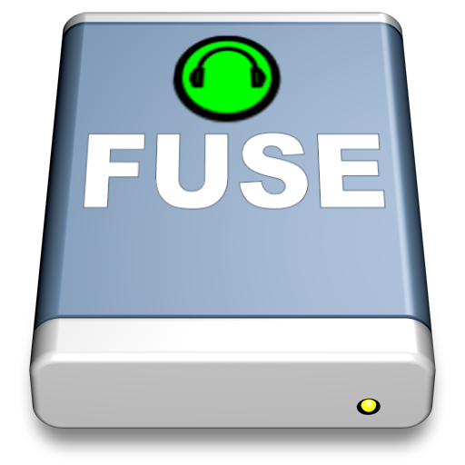

A long time
ago I ripped my entire CD collection to a bunch of mp3 files. I
wanted to listen to my music on my laptop. However, I've got a
lot of classical music and as I didn't want the annoying MP3 Gap
during a track change while listing to e.g. a Mahler symphony, I
decided to rip each CD to 1 single mp3 file, accompanies by a CUE
Sheet.
I could have choosen to rip my CDs to a bunch of FLAC files, but
FLAC format just takes too much space for me. So I choose a good
quality mp3.
This works great with software like FooBar2000 on Windows. It
didn't work that well on Linux, but these days, Clementine does have
support for cuesheets.
However, I've also got a Mac.
It's a really nice machine, and it comes with iTunes. iTunes is a
great product, but it just can't handle CUE Sheets. Here's
where Mp3CueFuse comes in.
Mp3CueFuse uses OSXFuse
to make the MP3 + CUE Sheets available as a read only file
system with .MP3 tracks! It presents CUE Sheet as directories and
presents the tracks in the CUE Sheets as .MP3 files. Under the hood,
it splits your mp3 files on the fly to mp3 tracks. The nice thing
about it, is that iTunes analyses your tracks and provides gapless
playback again. Now you can keep your cuesheet driven files and
still play them on your mac. It you use e.g. EasyTag to add
cover art to the original tracks, iTunes will import that too! This
is the ideal situation to have your (classical or liveset) mp3 files
playback gapless on Linux, Windows and Mac OSX and also be able to
synchronize your tracks with all the iPod devices your children
have.
Now everyone can import their MP3/CUE Sheets as .MP3 files in
iTunes. It works great and provides seamless gapless playback.
One thing to be aware of: You may
not want iTunes to copy the .MP3 files to the library. So
you need to tell iTunes not to copy imported files to the Music
collection. Otherwise, you'll loose a lot of disk space to double
.MP3 tracks.
Installation
For installation
details, see this
page on GitHub. Please note that this is BETA
software. If your cuesheets are erroneous or there is a problem
reading a file, the file system provider may crash. You then need to
analyse what file is causing the trouble, fix this problem (tell me
about it, so that I can make this software more robust) and remount
the fuse filesystem using the application from the application menu.